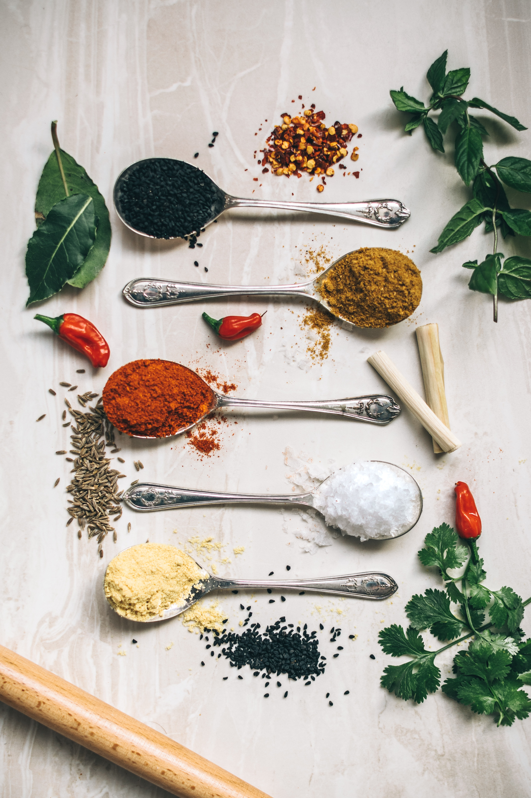

How to Make Billy's Famous Chili

Ingredients:
- 2 lbs hamburger meat
- 1 clove garlic (minced)
- 1 cup chopped onion
- 1 cup chopped celery
- 1/2 cup green pepper
- 1 teaspoon salt
- 1/4 teaspoon pepper
- 1 1/2 tablespoons chili powder
- 1 tablespoon paprika
- 1 teaspoon ginger
- 1 tablespoon sugar
- 1 6oz can tomato paste
- 1 8 oz can tomato sauce
- 1 lb can tomatoes
- 1/2 cup water
- 2 cans kidney beans
Cooking Instructions:
-
Cooking the Meat
In a medium to large pan, brown the hamburger meat with the onion and green pepper (6-7 minutes). -

Mixing it all Together
Transfer the cooked meat, onion and green pepper to a large pot. Mix all other ingredients except the kidney beans in the large pot. Let simmer on low heat for at least an hour. Or, use a crockpot and cook on low for 8 hours. -
Finishing Touches
Drain the kidney beans and add to the pot. Let simmer for at least 15 more minutes. Add more chili pepper to taste. Serve with shredded cheddar cheese, sour cream, and oyster crackers.